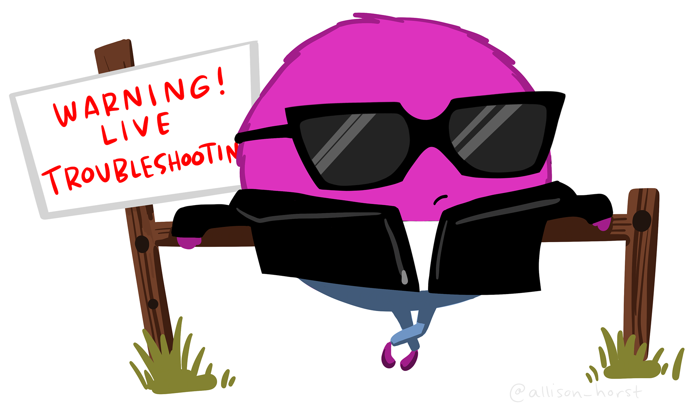

![]()

Y’all, I did something really exciting – I built another website! This time as a first-time freelancer. I’m not sure that I would have had the confidence to accept just any ole’ request to do so, but when Julie Lowndes, founding director of Openscapes, and also a mentor turned friend (thank you R-Ladies Santa Barbara community!), asked if I’d be interested in rebuilding the Openscapes website, it felt like a really awesome personal and professional growth opportunity.
There are so many amazing things I could say about this process and experience, but I’d be writing a novel. Instead, I’m going to do some high-level reflection and focus a bit on the parts of the process that I enjoyed the most.
TL;DR I rebuilt the Openscapes website using Quarto and documented a lot of what I learned and how I did it in the website’s GitHub Wiki. This was not only a super helpful practice for me in my own open science learning journey, but also for the Openscapes team as they take over continued maintenance of the site. I reflect on some of the most memorable moments of my first freelancing adventure, including creating responsive web pages, learning regex, and how open communication, collaboration, and cheering each other on can make any daunting task more approachable.
Task: Port the Openscapes website from blogdown to Quarto
To start, what does port mean? While it may be obvious to some, I feel like this word is sort of jargon-y. I first learned of it when Quarto was thrust into the spotlight and the R community at large began “porting their websites from distill/blogdown/etc to Quarto”. I came to understand that (at least in this context) “port” means “to convert or migrate” a website from one framework to another (or in other words, rebuild a website using different tools).
So why the need to port the Openscapes website to Quarto? Julie originally built the site back in 2018 using blogdown and the Universal Theme for Hugo (you can still check out the GitHub repo) – and it was really beautiful!
A screenshot of the old Openscapes website’s landing page, built using blogdown.
Unfortunately, upgrades to Hugo were beyond Julie’s scope to maintain which meant the site could no longer build locally (i.e. you couldn’t preview the site on a personal computer). This meant that the site needed to be redeployed in order to view any changes. Not only was this a rather slow process, but it also meant that there was no easy way to test out new additions/pages/features (or even check for typos) before sharing those updates with the rest of the online world. Additionally, the Openscapes team has used Quarto since its earliest days (read more about that in their quarto blog posts) – it seemed like a good time as any to begin using this same tool for building the Openscapes website as well.
Pause: Why me?
For one, I am not a web developer. I also had never used blogdown before, but I have worked a fair bit with Quarto. My real job involves teaching data science skills to students in the Bren School’s Master of Environmental Data Science (MEDS) program – this includes teaching students how to build a personal website using Quarto, how to customize Quarto websites using Sass & CSS, and how to add a blog to their Quarto website.
However, all websites I’ve built/contributed to/taught about have been personal websites (e.g. like my own, https://samanthacsik.github.io) – oftentimes, these leverage a special template to easily arrange the contents of a website’s landing page. Rebuilding the Openscapes website meant diving deeper into custom layouts, responsive web pages, and generally, a whole lot of stuff I had little to no familiarity with…which honestly really scared me (aren’t freelancers supposed to know how to do what they’re being hired to do??). With Julie’s reassurances that not knowing was okay, and that there was time and space to learn together (very on brand for the community she and her team foster through Openscapes ), I set off on my first freelancing adventure.
General Porting Process: Easy stuff first, then lots and lots of learning and iterating!
Despite the fact that I was leading the charge on most of the technical aspects of this project, porting the Openscapes website was truly a collaborative effort involving myself, Julie, and Stefanie Butland, one of the core Openscapes team members and someone I’ve gotten to know through attending past Openscapes events.
Steps for porting the website generally looked like this:
- Recreate as much of the website as possible: I created a Quarto website that looked as close as possible to the original blogdown site – this meant getting the main website pages and blog content moved over without much fussing. The most challenging part was creating a custom landing page that both matched the aesthetics of the blogdown site and that looked good on smaller viewports/mobile devices – this ended up being the last thing I addressed before wrapping up the project. Ultimately, I was able to recreate a Quarto-based Openscapes website that looked nearly identical to the blogdown version – it was really cool to see how flexible Quarto allows you to be!

A screenshot of the new Openscapes website’s landing page, built using Quarto! We were able to recreate the landing page so that it looked pretty darn similar to the blogdown site.
- Incorporate events: Openscapes Events were historically announced through a separate Events blog, which we decided to incorporate fully into the Openscapes website on its own events listing.
- Feedback & updates: Stef and Julie did multiple deep dive reviews of the website and I made changes based off their suggestions/requests. Some of these were minor (e.g. “Can we add a bit more vertical space in underlined text”, “this hyperlinked text is broken”), while others required a bit more thought (e.g. “let’s rethink how we structure content on this page”, figuring out CSS to style particular page elements). They also had the chance to share the website with a focus group, which provided invaluable feedback on content organization, language, etc. (e.g. “remove unnecessary text from the landing page”, “replace the words instructional materials with curriculum”)
- More feedback & updates: The hardest part and also the most fun part was the back-and-forth discussion on how to rethink, try out, and change the website. We fiddled a lot with content reorganization and CSS styling to better highlight different resources/elements. It was a super collaborative and iterative process to get things to where they are now!
- Figure out responsive web pages: I saved the most technically challenging part (at least for me) for last – learning how to create responsive web pages (where content adjusts size and positioning based on viewport size) involved a lot of trial and error.
- Deploy with Netlify & troubleshoot redirects: It took us a minute to understand how to get redirects to work. I won’t go into that here, but you can read about our solution on our redirects wiki.
Culture & Communication: Share openly and often, we’re all here to brainstorm, support, cheer on
While Julie, Stef, and I all had some level of experience using Quarto, we were dancing at the edge of our collective existing knowledge and trying out things that we weren’t always sure would work. Sharing progress and celebrating victories was a super important part of the process.

What I hoped to look like while navigating uncertain approaches, troubleshooting, and learning on the fly. Artwork by Allison Horst.
Work was largely asynchronous, so we relied heavily on online tools to communicate:
Slack
Specifically, the R-Ladies Global Slack workspace (again, always grateful for the R-Ladies community that brings together awesome people) became an important place to drop quick questions, requests, words of affirmation, and to cheer on successes.
![Stephanie Butland sends a congratulatory slack message that reads, "Sam and Julie CONGRATULATIONS on the beautiful website release! What an accomplishment. It represents Openscapes and our vision and work so well. [fox emoji][hedgehog emoji][squid emoji][wave emoji]". Sam and Julie both reacted to the message with a purple heart.](media/slack.png)
Celebrating the greatest success of them all – deploying the new Openscapes website!
GitHub Issues
Our primary place for keeping track of TODOs, documenting solutions, and soliciting feedback. Check out my first request for feedback (issue #14) or Julie & I documenting our Netlify deployment struggles and victories (issue #36).
Reflecting on the stand-out moments
Building this website has been a real journey (a 6-month long one)! While I can’t recount all the details here, I did want to reflect on a few things I’m most excited about:
Greatest victory: responsive web pages
A responsive web page is one with elements that automatically resize and reorganize based on the size and shape of the viewport and/or device it’s being viewed on. This responsiveness is critically important for ensuring a high quality user experience, no matter how a user is accessing the website.
For example, note how elements organized in columns (e.g. Engage/Empower/Amplify, the three stat boxes) when the browser viewport is at full width will stack vertically once the browser window is made narrower (elements will also be stacked vertically when viewed on a mobile device):

as opposed to columns getting crunched when the browser window is made narrower:

I left figuring this out until the very end…mostly because I had no idea how to approach doing so. The Quarto documentation makes reference to Bootstrap’s CSS Grid and provides a simple, but clear example of creating columns in our Quarto doc. This helped me get started on a non-responsive 3-column layout, which looks like this:
::: {.grid}
::: {.g-col-4}
left-hand column content
:::
::: {.g-col-4}
center column content
:::
::: {.g-col-4}
right-hand column content
:::
:::where {.g-col-4} defines the width of the column (Bootstrap’s grid system has a total of 12 columns across a page, so each of our 3 columns will be a width of 4).
I got stuck for a long while after this point – the CSS Grid documentation makes it clear that this approach can be used to create responsive columns, but I found the provided example to be a bit confusing. After a lot of trial and error, and stumbling across this table that (sort of) makes reference to .g-col vs. .g-col-md classes from the CSS Grid documentation example, I eventually got myself some working responsive columns. While I still don’t fully understand it, this is my best attempt at explaining my working solution…here’s what it looks like:
::: {.grid}
::: {.g-col-12 .g-col-md-4}
left-hand column content
:::
::: {.g-col-12 .g-col-md-4}
center column content
:::
::: {.g-col-12 .g-col-md-4}
right-hand column content
:::
:::.g-col-12 represents the width of each column when the viewport is made smaller (e.g. either a narrow browser window or on a mobile device) – since the width of our browser is a total of 12 units, each column will take up the full width of the browser and be forced to stack vertically.
.g-col-md-4 represents the width of each column when the viewport is made larger (e.g. a browser window that takes up a full laptop screen) – in this case, each column will only take up 4 units, or a third of the full width of the browser and can sit side-by-side one another.
Here’s the above example in action:

Ultimately, I used this approach for all pages that needed responsive columns (largely the landing page, but also the Our Team page and Resources page). If you end up finding this helpful in your own responsive web page journey – Yay!! If you have an alternative or improved solution, or if you understand these CSS grid classes more than I do, please do drop me a line – I’d love to hear all about it
Favorite new thing(s) learned: mobile device previews and regex
Okay, I couldn’t choose one, so here are my top two:
- Previewing a web page for mobile device viewing: When building my own personal website, I always took the “let’s make changes, redeploy, then check it out on my phone to see how it looks” approach…which is never ideal. Huge shout out to my husband, Brendan Shanny, who showed me that you can preview a website as it would appear on a mobile device directly from Google Chrome. Right click on a web page > choose Inspect > click on the button with the laptop and phone icon in the top left corner of the Inspect pane to toggle between standard computer and mobile viewport sizes.

View a web page as if on a mobile device by clicking on the laptop/phone button (circled in red) at the top of the Inspect pane.
- Regular expressions (regex) are really powerful: I’ve heard the terms “regular expressions” and “regex,” and I know they underlie some really powerful R packages (e.g.
{stringr}for manipulating character strings), but I never really knew what they were or how to use them. Julie first introduced me to using regex during one late-night co-working session (she broke out her original copy of Practical Computing for Biologists, by Steven H. D. Haddock and Casey W. Dunn, which includes an excellent primer). Not more than a few days later, we realized we needed to reformat our redirects file, changing the way blog post URLs were represented from this:
# Redirects from what the browser requests to what we serve
blog/2021/03/10-nasa-announcement /blog/2021-03-10-nasa-announcement
blog/2021/05/03-noaa-nwfsc-champions /blog/2021-05-03-noaa-nwfsc-champions
blog/2022/02/17-esip-winter-2022 /blog/2022-02-17-esip-winter-2022to this:
[[redirects]]
from = "/blog/2021/03/10-nasa-announcement/"
to = "/blog/2021-03-10-nasa-announcement/"
status = 301
[[redirects]]
from = "/blog/2021/05/03-noaa-nwfsc-champions/"
to = "/blog/2021-05-03-noaa-nwfsc-champions/"
status = 301
[[redirects]]
from = "/blog/2022/02/17-esip-winter-2022/"
to = "/blog/2022-02-17-esip-winter-2022/"
status = 301Using regular expressions (directly in RStudio!) to create patterns for matching, locating, and manipulating text allowed me to quickly reformat the 100+ redirects all at once. I documented my workflow in our redirects wiki.
Favorite website feature: wikis
My favorite website feature is actually not a feature of the website itself (), but rather our GitHub Wiki for documenting conventions and workflows for current/future maintainers.
While most of my notes initially ended up in GitHub Issues (e.g. page structure/styling conventions (issue #4), Using knitr::include_graphics() (issue #11)), wikis seemed to be a more organized solution for sharing these notes (and other important information) with those who will be maintaining and making changes to the website moving forward. Wiki articles range from creating and categorizing new blog posts to adding images to the website in a consistent way to an overview of styling the website using Sass & CSS.
I’m honestly so jazzed about wikis at the moment and plan to start using them more to share project-specific information. Recently I created a wiki to provide setup instructions for workshop participants – in the past, I’ve linked a shared Google Doc in the repository’s README with similar setup information, which is effective, but harder to keep track of as a maintainer.
Most valuable personal growth moment: overcoming imposter syndrome
I’ve struggled with imposter syndrome throughout my professional career (as so many do!) – and it is hard to shake the feeling that I’m not qualified to be doing [fill in the blank with any one of the things that I get in my own head about]. This project was not one of those things. And I totally credit it to the supportive (and just generally fun) community that Julie and Stef create. It’s not easy to foster an honest no-such-thing-as-failing environment, but I really felt that way from the moment I got started (which says a lot, given that I’d be learning on the go for much of the project). I feel very lucky and honored that they trusted me with this work.
The Openscapes team certainly practices what they preach – you can read all about the Openscapes Approach for promoting psychological safety, kinder science, and a growth mindset, as well as explore the many other great resources developed by Openscapes.
You can check out the Openscapes website at https://openscapes.org/. Source code is available on GitHub.
Citation
BibTeX citation:
@online{csik2023,
author = {Csik, Samantha and Csik, Samantha},
title = {Porting the {Openscapes} Website from Blogdown to {Quarto}},
date = {2023-08-01},
url = {https://samanthacsik.github.io/posts/2023-08-01-openscapes-website/},
langid = {en}
}
For attribution, please cite this work as:
Csik, Samantha, and Samantha Csik. 2023. “Porting the Openscapes
Website from Blogdown to Quarto.” August 1, 2023. https://samanthacsik.github.io/posts/2023-08-01-openscapes-website/.